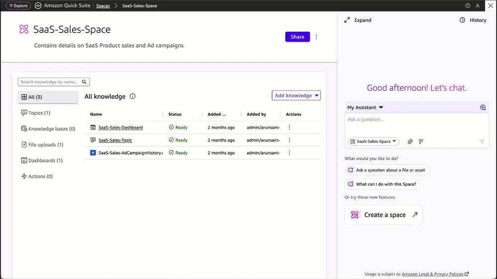
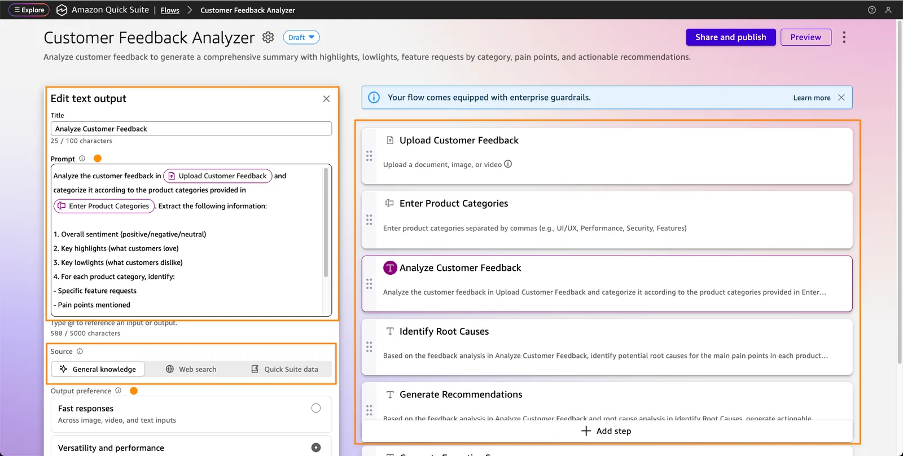
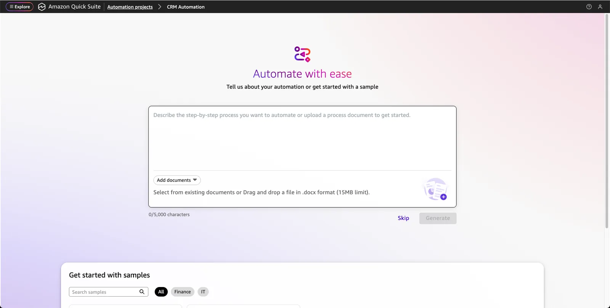

Là Amazon QuickSight trước đây. Dựng analysis rồi publish thành dashboard.
Lấy số liệu từ database, kho dữ liệu hoặc file Excel/CSV qua dataset. Space không phải nguồn dữ liệu của Quick Sight.
Topic giúp hỏi số liệu bằng câu tự nhiên.
Dùng khi nào
Tạo analysis từ câu mô tả: chọn dataset, Quick dựng sheet, biểu đồ, bộ lọc (Generate Analysis, 5/2026).
Tạo analysis từ ảnh chụp một dashboard có sẵn, kể cả của công cụ BI khác (9/2026).
Hỏi số liệu bằng câu tự nhiên, nhận biểu đồ và phần giải thích.
Phân tích giả định (what-if) bằng tính năng Scenarios.
Từ dashboard, tạo ticket hoặc cảnh báo bằng một thao tác.

Hỏi bằng câu tự nhiên, nhận biểu đồ và tóm tắt. Ảnh: AWS News Blog
Nguồn: AWS News Blog (09/10/2025); AWS What's New (04/05/2026, 17/09/2026); docs.aws.amazon.com/quick: "Starting an analysis in Quick Sight"
Amazon Quick
Quick Flows
Mô tả công việc bằng lời, Quick tạo flow gồm các bước nhập liệu, xử lý, kết quả. Không cần lập trình.
Chia sẻ flow cho đồng nghiệp, chạy từ thư viện hoặc từ chat, hoặc chạy theo lịch.
Có trong cả gói Free.
Dùng khi nào
Các việc vặt lặp lại hằng ngày của một người hoặc một nhóm.
Tạo báo cáo nghiên cứu định kỳ: đặt Quick Research làm một bước, chạy theo lịch.
Đóng gói một cách làm hay thành flow để cả nhóm dùng lại.

Flow được tạo từ mô tả. Ảnh: AWS News Blog
Nguồn: AWS News Blog (09/10/2025); aws.amazon.com/quick; AWS What's New "Quick Research in Quick Flows" (08/12/2025)
Amazon Quick
Quick Automate
Tự động hoá quy trình nhiều bước, qua nhiều phòng ban và hệ thống. Thiết lập bằng mô tả hoặc từ tài liệu quy trình có sẵn.
Chuyển các trường hợp ngoại lệ cho người duyệt. Có phân quyền, quản lý phiên bản, nhật ký và báo cáo.
Dùng khi nào
Đối soát hoá đơn: nhóm Finance của Amazon xử lý hàng nghìn hoá đơn mỗi tháng.
Ngân hàng: xử lý hồ sơ vay, hồ sơ tín dụng, quản lý tài khoản.
Bảo hiểm: xử lý bồi thường, quản lý hợp đồng, thẩm định.
Chăm sóc khách hàng: Propulse Lab xử lý hơn 1.600 ticket mỗi tháng, có người kiểm tra.
Phân tích tài chính và tự gửi bản tóm tắt cho các bên liên quan.

Ảnh: AWS News Blog
Nguồn: aws.amazon.com/quick/automate; aws.amazon.com/quick; aboutamazon.com; AWS News Blog (09/10/2025)
Amazon Quick
Kết nối và gói dịch vụ
Kết nối
Hơn 50 connector có sẵn: SharePoint, Snowflake, Google Drive, OneDrive, Outlook, ServiceNow, Databricks, Redshift, S3...
Actions cho phép đọc và ghi dữ liệu trên ứng dụng SaaS và MCP server.
Connector do AWS làm sẵn cho từng ứng dụng. MCP là chuẩn mở: hệ thống nào có MCP server, kể cả hệ thống nội bộ tự viết, đều kết nối được.
Gói dịch vụ
Free, Plus (dùng thử 30 ngày), Professional, Enterprise.
Professional và Enterprise có thêm Quick Sight, Quick Automate, kết nối nguồn dữ liệu AWS, đăng nhập qua hệ thống định danh của công ty, quản trị nâng cao.
Agent hours từ 9/2026: Professional 8 giờ/tháng, Enterprise 18 giờ/tháng.
AWS không dùng dữ liệu khách hàng để huấn luyện model ở mọi gói.
Giá chi tiết: aws.amazon.com/quick/pricing
Nguồn: aboutamazon.com; docs.aws.amazon.com/quick: "Managing a space"; aws.amazon.com/quick/faqs; AWS What's New (09/09/2026)
Demo
Tạo một Space từ vài tài liệu, hỏi đáp trong phạm vi Space.
Chạy Quick Research cho một đề tài, xem kế hoạch nghiên cứu và báo cáo có trích dẫn.
Quick Sight: hỏi số liệu bằng câu tự nhiên trên một dashboard mẫu.